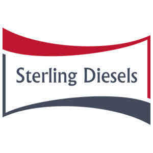

Trade Mark Journal No.2025/026 27 June 2025
UK00004218074 12 June 2025 (7,37)

- Class 7
- Injectors; Fuel injectors; Engine injectors; Pneumatic fuel injectors for motors; Pneumatic fuel injectors for engines; Fuel injection pumps; Fuel injectors for engines; Injectors for engines; Injectors for machines; Diesel injection devices; Fuel injectors for internal combustion engines; Fuel nozzles; Fuel injector parts for land and water vehicle engines; Engine fuel pumps; Exhaust gas recirculation [EGR] valves for motors and engines; Fuel valves; Fuel injection systems for engines; Fuel injection devices for internal combustion engines; Fuel dispensing pumps; Petrol injection instruments; Fuel pumps; Engine valves; Suction valves for gas compressors; Pump diaphragms; Diaphragms (Pump -); Valve actuators; Injection moulding machines; Power valve for carburetors [vehicle parts]; Pump impellers; Oil tank plugs and caps [vehicle engine parts]; Guns for fuel dispensing pumps; Hydraulic valve actuators; Glow plugs for Diesel engine; Positive crankcase ventilation [PCV] valves for motors and engines; Plunger pistons; Plunger type valves for use with tanks; Valve diaphragms; Ejectors [pumps]; Injection presses; Pneumatic valve actuators; Injection plastic molding machines; Pump control valves; Jet pumps for vacuum generation; Injection moulds; Vacuum pump installations; Valves for pumps; Piston compressors; Piston rings [internal combustion engine parts]; Shaft bearings for vacuum pumps; Vacuum pumps; Air compressor pumps; Fuel pumps for motor vehicles; Coils [internal combustion engine parts]; Suction nozzles for vacuum cleaners; Gas turbo engines; Feeding apparatus for engine boilers; Piston pins; Dispensing valves being machine parts; Suction pumps; Lubricating pumps; Pump shafts; Fuel dispensing pumps for service stations; Automatic inlet control valves for reciprocating air compressors; Suction valves for air compressors; Lubrication pumps; Ignition coils for automotive engines; Piston rings being engine parts; Pressure reducer valves [parts of machines]; Axial pumps; Engine driven water pumps; Vacuum pads for vacuum pump machines; Distributor caps [internal combustion engine parts]; Exhaust gas treatment systems for diesel engines; Pistons [internal combustion engine parts]; Fuel filters; Screw pumps; Ignition wires for vehicle engines; Fuel and air mixture regulators being parts of internal combustion engines; Fuel filters for vehicle engines; Valves being parts of pumps; Fittings for engine boilers; Condensers [ignition parts for internal combustion engines]; Reciprocating vacuum pumps; Cylinder head gaskets; Dosing valves [parts of machines]; Electric ignition apparatus for internal combustion engines; Piston rings for heat pumps; Carburetors [vehicle parts]; Cam covers [vehicle parts]; Axles [machine parts]; Engine cases [vehicle parts]; Cast iron parts for pipes [parts of machines]; Cylinder covers [parts of machines]; Mechanical engine parts for land vehicles; Rocker arms [vehicle engine parts]; Cranks [parts of water vehicles]; Reducing gears [parts of machines]; Bushes being parts of motors; Hoods [machine parts]; Wheel hubs being parts of machines; Bushings being parts of machines; Bushings for use as parts of machines; Bushings [parts of machines]; Wheels being parts of machines; Cranks [parts of air vehicles]; Stop valves of plastic [parts of machines]; Chainguards [parts of machines]; Springs [parts of machines]; Springs being parts of machines; Push rods [vehicle engine parts]; Housings [parts of machines]; Filters being parts of motors; Cylinders [machine parts]; Sumps being parts of vehicle gearboxes [other than land vehicle]; Regulators as machine parts; Regulators being machine parts; Stop valves of metal [parts of machines]; Joints [parts of engines]; Reduction gears being parts of machines; Dampers [parts of machines]; Adaptors for tool bits [parts of machines]; Brushes being parts of motors; Spur wheels [parts of machines]; Bearings [parts of machines]; Bearings, as parts of machines; Cams being parts of machines; Taps being parts of motors; Bellows being parts of machines; Bellows [parts of machines].
- Class 37
- Repair of parts of engines; Maintenance and repair of chassis parts and bodies for vehicles; Fitting of replacement vehicle parts; Maintenance and repair of motor vehicles and parts thereof; Repair and maintenance of motor vehicles and parts thereof and of engines for motor vehicles and parts thereof; Installation of parts for vehicles; Auto body repair services; Maintenance and repair of axles and parts thereof; Maintenance and repair of parts and fittings for boats; Automobile body repair and finishing for others; Assembly [installation] of parts for vehicles; Repair of air filters and parts thereof; Maintenance of parts and fittings for commercial motor land vehicles; Custom installation of exterior, interior and mechanical parts of vehicles [tuning].
Sterling Diesels Ltd